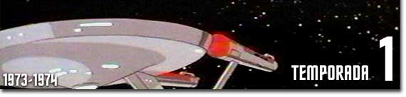

Episdios
01.
More Tribbles, More Troubles
02.
The Infinite Vulcan
03.
Yesteryear
04.
Beyond the Farthest Star
05.
The Survivor
06.
The Lorelei Signal
07.
One of Our Planets Is Missing
08. Mudd's Passion
09. The Magicks of Megas-Tu
10. Time Trap
11. Slaver Weapon
12. Jihad
13. The Ambergris Element
14. Once Upon a Planet
15. The Terratin Incident
16. The Eye of the Beholder